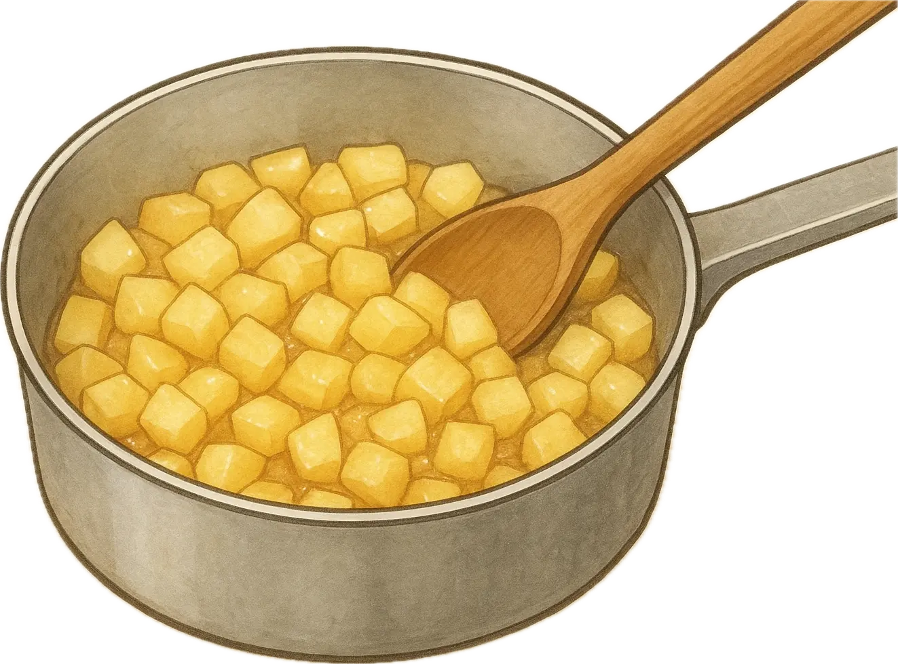

アップルパイの作り方

パイシートで簡単アップルパイ
🍎 材料（6個分）
- 冷凍パイシート…2枚
- りんご…1個
- 砂糖…大さじ2
- バター…10g
- シナモン…少々（お好み）
- 卵黄…1個
🧁 作り方
- りんごの皮をむいて1センチ角に切る
- 小鍋にバターを溶かし、りんご・砂糖・シナモンを加えて炒める
- りんごがしんなりして水分がほぼなくなるまで加熱する
- 覚ましておく
- パイシートを少し解凍して、めん棒で伸ばす
- 1枚を3等分にして切る
- 上になるパイシートにはナイフで9個切れ目を入れる
- 下になるパイシートにはフォークで数ヶ所穴を空け、りんごをのせる
- 上のパイシートを被せて、フォークで周りをしっかり押さえて閉じる
- 表面に卵黄を塗る
- クッキングシートを敷いた天板に並べて、200℃のオーブンで20~25分焼いたら完成✨